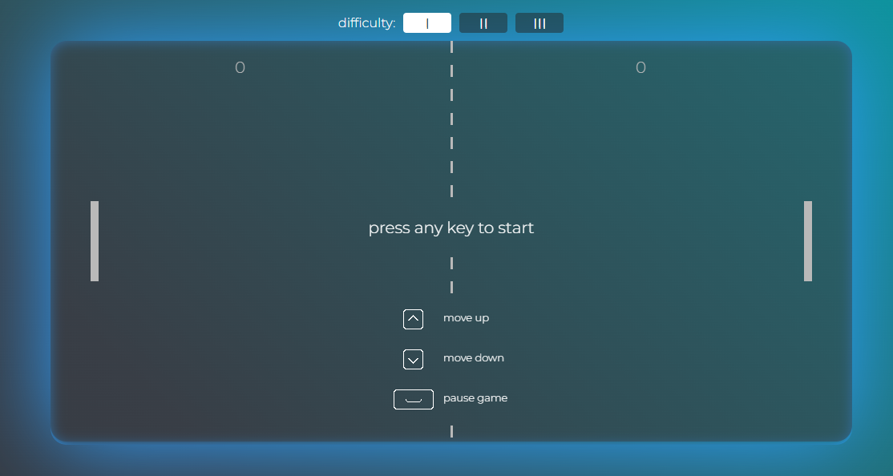

<div class="projectPreviewWrapper">
  <div class="projectDescription">
    <div class="projectPreviewText" (mouseenter)="portfolio.mouseEnterText()" (mouseleave)="portfolio.mouseLeaveText()">
      Das traditionelle Pong-Spiel mit eigenen Features.
      <br>
      Der Spieler spielt gegen einen Bot, dessen Schwierigkeit über die Knöpfe über dem Canvas eingestellt werden kann
      (3 Stufen).
    </div>
    
  </div>
  <div class="projectPreviewButtons">
    <button class="projectPreviewButton"><a href="https://github.com/FlorianGenz/pong" target="_blank">
      <mat-icon>open_in_new</mat-icon>
      GitHub</a></button>
    <button class="projectPreviewButton"><a href="https://pongfg.netlify.app" target="_blank">
      <mat-icon>open_in_new</mat-icon>
      Seite besuchen</a></button>
  </div>
</div>
